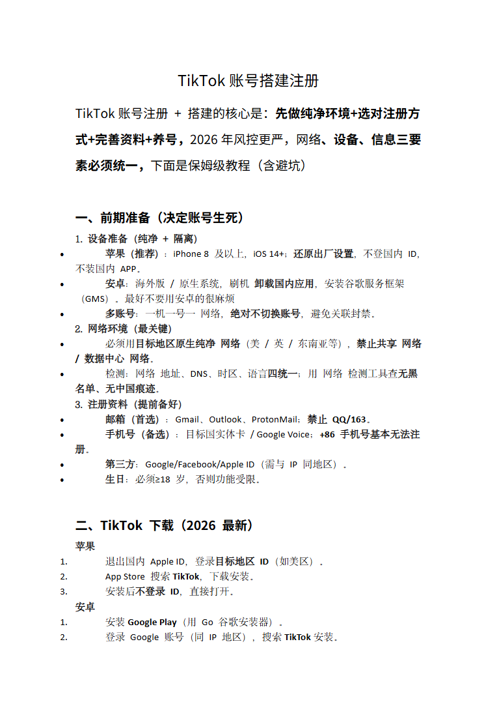
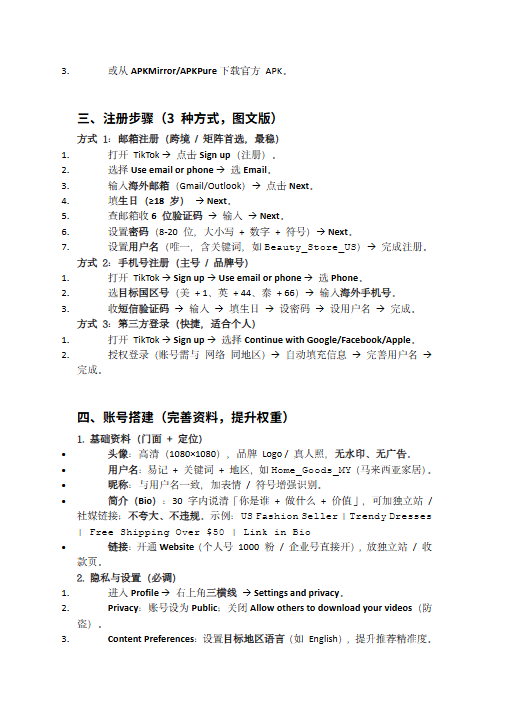
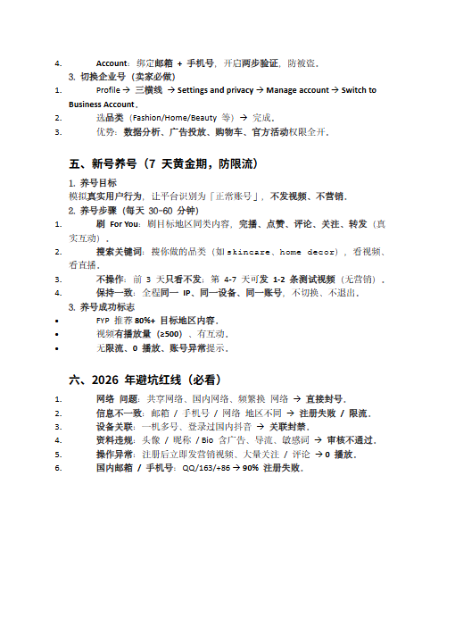
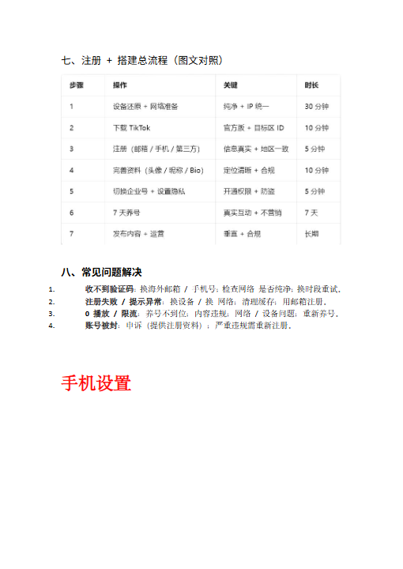
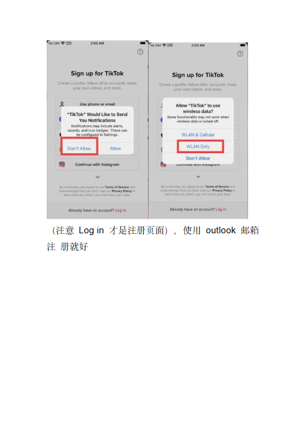

第 1 页

查看文字
TikTok账号搭建注册TikTok账号注册+搭建的核心是：先做纯净环境+选对注册方式+完善资料+养号，2026年风控更严，网络、设备、信息三要素必须统一，下面是保姆级教程（含避坑）一、前期准备（决定账号生死）1.设备准备（纯净+隔离）苹果（推荐）：iPhone8及以上，iOS14+；还原出厂设置，不登国内ID，不装国内APP。安卓：海外版/原生系统，刷机卸载国内应用，安装谷歌服务框架（GMS）。最好不要用安卓的很麻烦多账号：一机一号一网络，绝对不切换账号，避免关联封禁。2.网络环境（最关键）必须用目标地区原生纯净网络（美/英/东南亚等），禁止共享网络/数据中心网络。检测：网络地址、DNS、时区、语言四统一；用网络检测工具查无黑名单、无中国痕迹。3.注册资料（提前备好）邮箱（首选）：Gmail、Outlook、ProtonMail；禁止QQ/163。手机号（备选）：目标国实体卡/GoogleVoice；+86手机号基本无法注册。第三方：Google/Facebook/AppleID（需与IP同地区）。生日：必须≥18岁，否则功能受限。二、TikTok下载（2026最新）苹果1.退出国内AppleID，登录目标地区ID（如美区）。2.AppStore搜索TikTok，下载安装。3.安装后不登录ID，直接打开。安卓1.安装GooglePlay（用Go谷歌安装器）。2.登录Google账号（同IP地区），搜索TikTok安装。
第 2 页

查看文字
3.或从APKMirror/APKPure下载官方APK。三、注册步骤（3种方式，图文版）方式1：邮箱注册（跨境/矩阵首选，最稳）1.打开TikTok→点击Signup（注册）。2.选择Useemailorphone→选Email。3.输入海外邮箱（Gmail/Outlook）→点击Next。4.填生日（≥18岁）→Next。5.查邮箱收6位验证码→输入→Next。6.设置密码（8-20位，大小写+数字+符号）→Next。7.设置用户名（唯一，含关键词，如Beauty_Store_US）→完成注册。方式2：手机号注册（主号/品牌号）1.打开TikTok→Signup→Useemailorphone→选Phone。2.选目标国区号（美+1、英+44、泰+66）→输入海外手机号。3.收短信验证码→输入→填生日→设密码→设用户名→完成。方式3：第三方登录（快捷，适合个人）1.打开TikTok→Signup→选择ContinuewithGoogle/Facebook/Apple。2.授权登录（账号需与网络同地区）→自动填充信息→完善用户名→完成。四、账号搭建（完善资料，提升权重）1.基础资料（门面+定位）头像：高清（1080×1080），品牌Logo/真人照，无水印、无广告。用户名：易记+关键词+地区，如Home_Goods_MY（马来西亚家居）。昵称：与用户名一致，加表情/符号增强识别。简介（Bio）：30字内说清「你是谁+做什么+价值」，可加独立站/社媒链接；不夸大、不违规。示例：USFashionSeller|TrendyDresses|FreeShippingOver$50|LinkinBio链接：开通Website（个人号1000粉/企业号直接开），放独立站/收款页。2.隐私与设置（必调）1.进入Profile→右上角三横线→Settingsandprivacy。2.Privacy：账号设为Public；关闭Allowotherstodownloadyourvideos（防盗）。3.ContentPreferences：设置目标地区语言（如English），提升推荐精准度。
第 3 页

查看文字
4.Account：绑定邮箱+手机号，开启两步验证，防被盗。3.切换企业号（卖家必做）1.Profile→三横线→Settingsandprivacy→Manageaccount→SwitchtoBusinessAccount。2.选品类（Fashion/Home/Beauty等）→完成。3.优势：数据分析、广告投放、购物车、官方活动权限全开。五、新号养号（7天黄金期，防限流）1.养号目标模拟真实用户行为，让平台识别为「正常账号」，不发视频、不营销。2.养号步骤（每天30-60分钟）1.刷ForYou：刷目标地区同类内容，完播、点赞、评论、关注、转发（真实互动）。2.搜索关键词：搜你做的品类（如skincare、homedecor），看视频、看直播。3.不操作：前3天只看不发；第4-7天可发1-2条测试视频（无营销）。4.保持一致：全程同一IP、同一设备、同一账号，不切换、不退出。3.养号成功标志FYP推荐80%+目标地区内容。视频有播放量（≥500）、有互动。无限流、0播放、账号异常提示。六、2026年避坑红线（必看）1.网络问题：共享网络、国内网络、频繁换网络→直接封号。2.信息不一致：邮箱/手机号/网络地区不同→注册失败/限流。3.设备关联：一机多号、登录过国内抖音→关联封禁。4.资料违规：头像/昵称/Bio含广告、导流、敏感词→审核不通过。5.操作异常：注册后立即发营销视频、大量关注/评论→0播放。6.国内邮箱/手机号：QQ/163/+86→90%注册失败。
第 4 页

查看文字
七、注册+搭建总流程（图文对照）八、常见问题解决1.收不到验证码：换海外邮箱/手机号；检查网络是否纯净；换时段重试。2.注册失败/提示异常：换设备/换网络；清理缓存；用邮箱注册。3.0播放/限流：养号不到位；内容违规；网络/设备问题；重新养号。4.账号被封：申诉（提供注册资料）；严重违规需重新注册。手机设置
第 8 页

查看文字
（注意Login才是注册页面），使用outlook邮箱注册就好